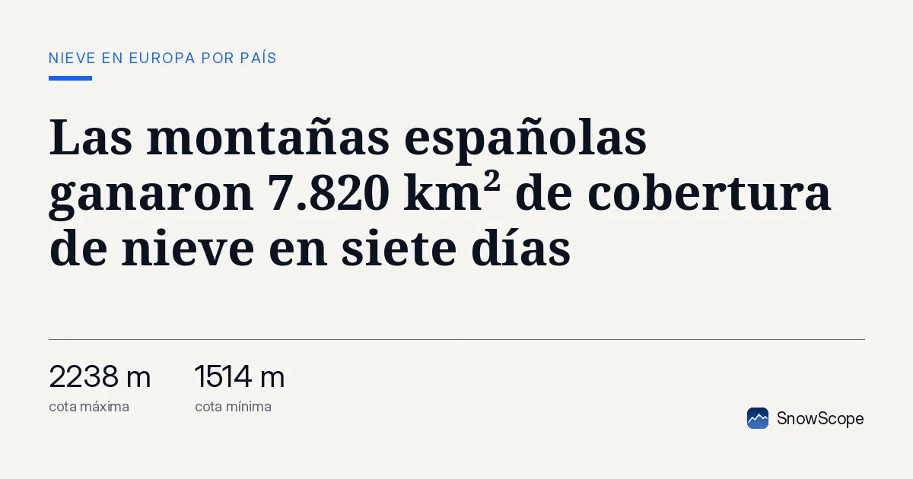
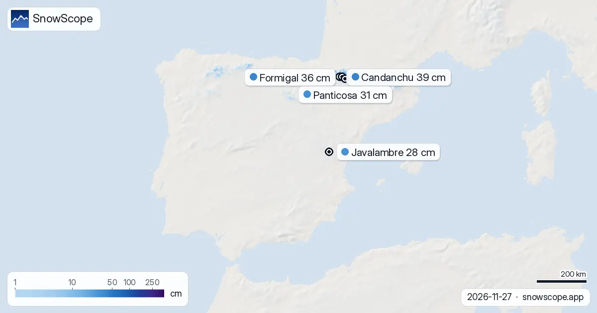

Las montañas españolas ganaron 7.820 km² de cobertura de nieve en siete días
La cobertura de nieve en las montañas españolas se ha expandido dramáticamente. En solo siete días, el área blanca en todo el país creció de 720 km² a 8.540 km², impulsada por caídas sustanciales en los Pirineos y las cadenas del norte. El momento es llamativo: Candanchú, Formigal y Panticosa tienen ahora profundidades muy por encima de lo que normalmente llevarían a finales de noviembre.
Consulta la previsión de nieve en tiempo real de Candanchu en la app SnowScopeEspesor de nieve, alertas de nieve polvo y mapa 3D, gratis.
Una semana de transformación
La expansión cuenta una historia hidrológica clara. El 20 de noviembre, la nieve cubría solo una fracción del terreno alto de España. Para el 27 de noviembre, las zonas montañosas conectadas entre 1.500 y 5.000 m de elevación habían acumulado suficiente agua para blanquear 8.540 km² del paisaje. Ese salto de 7.820 km² representa un sistema que se ha recargado en días en lugar de semanas.
Tres cadenas montañosas soportaron el grueso de la caída. Los Pirineos españoles acumularon 36 cm en 72 horas, la Cordillera Cantábrica 22 cm, y las tierras altas gallegas 11 cm. Los Pirineos—la más alta y fría de las cadenas españolas—lideraron la carga, como suelen hacer cuando llega humedad atlántica desde el noroeste.
| Day | White area | Most new snow in 3 days | Deepest resort |
|---|---|---|---|
| sábado 21 de noviembre | 540 km² | 2 cm | Estació d'Esquí Baqueira-Beret |
| domingo 22 de noviembre | 1490 km² | 2 cm | Aramón Cerler |
| lunes 23 de noviembre | 990 km² | 2 cm | Estació d'Esquí Baqueira-Beret |
| martes 24 de noviembre | 10.560 km² | 8 cm | Formigal |
| miércoles 25 de noviembre | 15.840 km² | 16 cm | Candanchu |
| jueves 26 de noviembre | 10.800 km² | 19 cm | Candanchu |
| viernes 27 de noviembre | 8540 km² | 16 cm | Candanchu |

Dónde se almacena el agua ahora
La banda entre 2.000 y 2.500 m contiene un promedio de 9 cm en toda España, con un 73 por ciento de cobertura en esta zona. Por encima de 2.500 m, las profundidades alcanzan 13 cm de promedio en un 68 por ciento del área. Estas son las elevaciones donde la nieve persistirá más tiempo conforme el invierno se profundiza; son los niveles de reserva de las altas montañas españolas.
Por debajo de 2.000 m, el almacenamiento es escaso. La banda de 1.500–2.000 m muestra solo 2 cm de profundidad media y un 34 por ciento de cobertura—parcheada, vulnerable al deshielo. Esta es nieve de principios de temporada en una altura incómoda, donde los ciclos de congelación-deshielo y la radiación solar pondrán a prueba su longevidad.

Estaciones con mucha más cobertura que lo normal
Entre las 31 estaciones de toda España, 26 reportan ahora nieve medible. Candanchú lidera con 39 cm, más del doble de su profundidad habitual para finales de noviembre. Formigal tiene 36 cm (133 por ciento de lo normal), y Panticosa 31 cm—un sorprendente 443 por ciento por encima del valor típico de finales de noviembre de 7 cm en ese lugar. Estas estaciones pirenaicas están a 2.200–2.264 m, la zona donde la caída reciente se ha acumulado más.
Javalambre, más al sur en la Cordillera Ibérica, tiene solo 28 cm a pesar de recibir solo 1 cm en las últimas 72 horas. Su menor elevación y su carácter más continental significan menos humedad y evaporación más rápida. Espot, en los Pirineos Catalanes, lleva 23 cm—por debajo de lo normal para su altura—habiendo capturado menos del flujo atlántico.
El breve respiro que se acerca
Los próximos tres días verán una acumulación mínima: solo 1–2 cm de pronóstico en todo el país, con el 29 de noviembre como el día más activo con 2 cm. El pulso de nevadas se está agotando. Después del 30 de noviembre, el pronóstico se adelgaza aún más: 1 cm máximo durante la semana siguiente.
Sin embargo, el panorama más amplio cambia a principios de diciembre. Entre el 5 y el 11 de diciembre, los pronósticos señalan hasta 13 cm de nieve potencial en ciertas zonas, aunque esto está más allá del horizonte de pronóstico firme y conlleva mayor incertidumbre.
El balance de agua en la montaña ahora
Desde una perspectiva hidrológica, este evento marca la transición del otoño al invierno montañoso genuino. La caída ha inyectado precipitación almacenada en las elevaciones más altas, donde permanecerá sólida a través de diciembre y enero. Para los sistemas fluviales españoles alimentados por fusión de nieve—el Ebro, el Duero, el Tajo—este manto de nieve representa suministro futuro de agua, comprimido en las horas más frías del año.
Sin embargo, la zona de deshielo (1.500–2.000 m) sigue siendo vulnerable. Su cobertura delgada y parcheada responderá a cualquier periodo cálido, liberando agua cuesta abajo antes de que termine el año. Solo el frío profundo y las elevaciones altas garantizan que el regalo de esta semana sobreviva hasta la primavera.
Vecinos y contexto
Andorra, vecina montañosa de España al noreste, disfruta de cobertura más extensa con un 84 por ciento de proporción blanca y muestra nieve más profunda en su líder, Canaro, con 23 cm. Las laderas Alpinas y Pirenaicas de Francia presentan una imagen mixta: La Grave en los Alpes del sur tiene 158 cm, pero el promedio nacional se mantiene modesto en un 24 por ciento de cobertura. La transformación de España, aunque dramática en su propia escala, se sitúa a la sombra de las cadenas francesas más profundas y más consistentemente nevadas.
Consejos para esquiadores
- La mejor profundidad de nieve y cobertura ahora se encuentra por encima de 2.000 m. Planifica recorridos y días para maximizar el tiempo en pendientes superiores, donde la persistencia es mayor.
- La nieve de principios de temporada entre 1.500 y 2.000 m es parcheada y delgada; espera rocas y condiciones variables, especialmente en las laderas orientadas al sur. Esquía conservadoramente en esta banda.
- Consulta el boletín oficial de avalanchas antes de cualquier aventura fuera de pista; la caída reciente de 36 cm en los Pirineos y 22 cm en la Cordillera Cantábrica puede haber cargado el terreno pronunciado.
- Candanchú, Formigal y Panticosa lideran el país en profundidad. Los tres están a 2.200+ m y han capturado bien la tormenta atlántica.
- Llega nieve fresca mínima durante la próxima semana. La cobertura de nieve que ves el 27 de noviembre definirá en gran medida tus condiciones hasta el 1 de diciembre; planifica en consecuencia.
Sobre estas cifras
Los espesores de nieve de las estaciones son la nieve más profunda en las pistas altas en la fecha indicada; son estimaciones para una zona, no una medida en un punto. Las previsiones pueden cambiar. Consulta siempre el boletín oficial de aludes antes de salir fuera de pista.
Citar este informe
Para investigación, docencia o prensa: cifras y gráficos reutilizables libremente bajo CC BY 4.0 con esta cita.
SnowScope (2026), Las montañas españolas ganaron 7.820 km² de cobertura de nieve en siete días, https://snowscope.app/blog/es/2026/11/spain-snow-cover-gain-this-week-27-november-2026.html, consultado el 2026-11-27
SnowScope (Atlas Labs). (2026, November 27). Las montañas españolas ganaron 7.820 km² de cobertura de nieve en siete días. SnowScope snow reports. https://snowscope.app/blog/es/2026/11/spain-snow-cover-gain-this-week-27-november-2026.html
BibTeX
@misc{snowscope2026spainsnowcovergainthiswe,
author = {{SnowScope (Atlas Labs)}},
title = {Las montañas españolas ganaron 7.820 km² de cobertura de nieve en siete días},
year = {2026},
month = nov,
howpublished = {\url{https://snowscope.app/blog/es/2026/11/spain-snow-cover-gain-this-week-27-november-2026.html}},
note = {Published 2026-11-27 10:44 UTC; accessed 2026-11-27}
}· CC BY 4.0 · Métodos, datos y herramientas →
Candanchu: nieve y temperatura según la altura, este invierno vs el pasado (herramientas) →
Sigue Candanchu
Gratis: un aviso cuando llega la nieve y la previsión cada mañana.